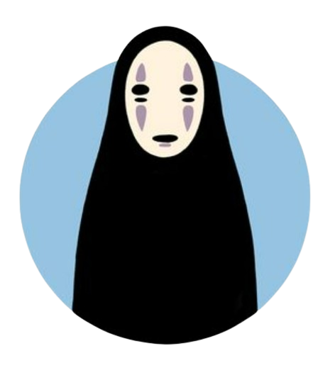
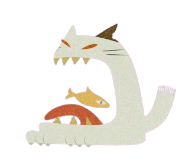
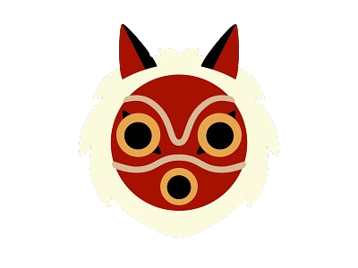
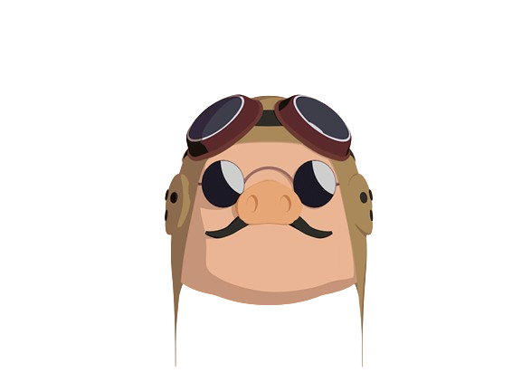
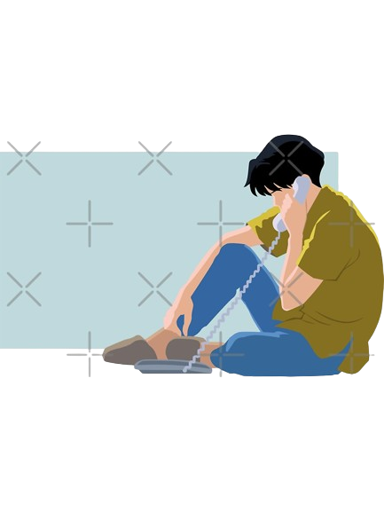

Directed by Hayao Miyazaki
10-year-old Chihiro (voiced by Rumi Hiiragi) and her parents (voiced respectively by Takashi Naitô and Yasuko Sawaguchi) stumble upon a seemingly abandoned amusement park. After her mother and father are turned into giant pigs, Chihiro meets the mysterious Haku (voiced by Miyu Irino), who explains that the park is a resort for supernatural beings who need a break from their time spent in the earthly realm, and that she must work there to free herself and her parents.
"Spirited Away has many lessons to it, like that you should be brave, and the only way to get anywhere in life is to work hard. The characters have different abilities. For example, there is a character called No-Face, and he can gain emotions and physical traits from people. Spirited Away is a wonderful movie and I definitely recommend this movie if you don’t have any movies to watch and if you haven’t watched it yet. I would give Spirited Away 5 stars out of 5! It was catchy, full of suspense, and humorous. Watch the movie, it is truly worth your time, and you will be… Spirited Away. ♥" -Amanda Wang
4.8 out of 5 ★

Directed by Hiroyuki Morita
High school student Haru (voiced by Chizuru Ikewaki) rescues a cat that was about to be run over by a truck and discovers the cat is actually a prince named Lune. Out of gratitude, Lune's father, the Cat King, asks her to marry Lune. Haru is brought to the Cat Kingdom, where she starts to develop feline features. When she is prevented from leaving, the Baron (voiced by Yoshihiko Hakamada) and Toto, two statues that have magically been given life, provide assistance in gaining her freedom.
"Nothing needs to be loved to be beautiful. They are adept at radiance in life. like a scarlet rose. When they come in contact with the sun, a rose is morning peeping! It's similar to that in this movie. It is a tasteful illustration of what real beauty is. This film captures happiness as a sensation. Having a wonderful time while watching this movie is a mirror of a great existence. This movie's story is really interesting. The story is, in my opinion, the most beautiful aspect of the entire film. They selected a subject that is interrelated with love and baptism. The combination of those makes it more beautiful. Also, the director is superb. He narrates the story with humility." -Mahamudul Hasan
4.7 out of 5 ★

Directed by Hayao Miyazaki
In the 14th century, the harmony that humans, animals and gods have enjoyed begins to crumble. The protagonist, young Ashitaka (infected by an animal attack, voiced by Yōji Matsuda), seeks a cure from the deer-like god Shishigami. In his travels, he sees humans ravaging the earth, bringing down the wrath of wolf god Moro and his human companion Princess Mononoke (referred to as San, voiced by Yuriko Ishika). His attempts to bring peace between her and the humans brings only conflict.
"Princess Mononoke is one of the best animated movies I have seen in a long time, and is up there with Studio Ghibli's best along with Spirited Away. I will say I am probably biased, as I am a huge Studio Ghibli fan, and love all of their films, I even like Cat Returns, which along with PomPoko is considered as one of the weaker Ghibli efforts. The animation in Princess Mononoke is absolutely stunning, with rich detailed backgrounds and brilliant character animation. The image of the Stag actually made my jaw drop. The music is fantastic as well, and although environmentalism is a subject matter very difficult to get right, what the filmmakers succeeded in doing was making a highly intriguing story that was not only original but succeeded in not being preachy at all. The film is also helped by the high calibre vocal talents of Minnie Driver, Claire Danes, Billy Bob Thornton et al (voicing quite remarkable characters) and a strong script. True, some of the images like the Demon Worm, may frighten younger viewers, but it is fair to say they were very powerful. All in all, Princess Mononoke is breathtaking and I recommend it highly." -Kyle Ellis
4.8 out of 5 ★
Directed by Hayao Miyazaki
In Italy in the 1930s, sky pirates in biplanes terrorize wealthy cruise ships as they sail the Adriatic Sea. The only pilot brave enough to stop the scourge is the mysterious Porco Rosso (voiced by Shuichiro Moriyama), a former World War I flying ace who was somehow turned into a pig during the war. As he prepares to battle the pirate crew's American ace, Porco Rosso enlists the help of spunky girl mechanic Fio Piccolo (voiced by Akemi Okamura) and his longtime friend Madame Gina (voiced by Tokiko Kato).
"With it's simple fast action story, female positive storyline, and no obscure or strange Japanese references; 'Porco Rosso' should be the default introductive Studio Ghibli film (especially in the USA). While I can appreciate the magical wonder of 'Spirited Away' and 'Howl's Moving Castle' or the childhood charm of 'My Neighbor Totoro' (Sorry, I'm not a fan of 'Kiki's Delivery Service'), I can still remember finishing these movies the first time and being like.., "WTH did I just watch?" Not that they're bad, but without others telling me these films are supposed to be great and my already existing love/appreciation for the art of animation I think I would have left these behind without a second watch. But with 'Porco Rosso', there's very little that I can see putting off the general audience from watching and even finishing this movie. Sure he's a flying pig-man that's never explained further than, 'He's cursed; don't worry about it.' and this condition is the butt of many forced ham-fisted jokes, but those things sort of melt away from the bigger story being told. He's just a dude who (with luck and God-given skill) is trying to make a buck with his passion and talents (even if it's a deadly profession) while the world is progressively leaving him and his kind (sea plane pilots) behind. During his story, he takes an unlucky L then in his eventual comeback he learns to look past other's appearances (women in this case) and with time he embraces a future that he's not initially accustomed to. While there are a couple of cheap jabs at Americans by painting overly ambitious men as simpletons; it never stays there long enough to be off putting. And it counters this portrayal with an American who is also a highly skilled pilot that does have some honor and mortality. I also like that while they take a hard stance that Fascism is horrible (and it is), it doesn't necessary mean everyone in a Fascist country agrees with the same terrible popular option or are mind-washed monsters. Some characters are still shown as normal people who are capable of helping others they care about or respect even if they don't agree with each other's beliefs. So I guess what I'm saying here is that everything is pretty well balanced, and combined with the beautiful scenery plus a scrappy air cowboy it's an adventure most people (including simpletons) can swallow. FYI, I believe I originally recommended 'Castle in the Sky' as a good start for those dipping their toes into the Studio Ghibli universe (which is still mostly true), but after revisiting 'Porco Russo' I can say that this is a sure fire crowd pleaser that I could see myself showing my parents (who aren't interested in this type of stuff)." -Russel Rogers
4.8 out of 5 ★
Directed by Tomomi Mochizuki
Ocean Waves is high school love story set in Kochi, Japan. Morisaku Taku (voiced by Nobou Tobita) and Matsuno Yutaka (voiced by Toshihiko Sekiare) best friends when a girl from Tokyo named Muto Rikako (voiced by Yōko Sakamoto) transfers to their school. Excluding herself from group activities, she’s eventually labeled a snob. Matsuno has a crush on Rikako, so it’s no surprise that he gets a little jealous when Morisaku and Rikako start spending more time together. The rumors around school get worse, but Morisaku still insists there is nothing between him and Rikako.
"No matter the negative criticisms about Ocean Waves for my personal taste its actually good and has depth. It might not be for people who like romantic adventourous fast phase chibi movies. This is just being tune to the realities of life and true nature of people. Showing the good side of youth too who takes education and life responsibilities seriously. On behalf of Rikako's hard to deal character gives as the point just because we don't like certain people doesn't mean they dont get to be a member of an institution were they are also part of. It's just on us how we handle them and be the bigger person. Even if Rikako treats everyone terribly as a mean ungrateful heroine at the very end of their highschool story. They still look back at their memories with nostalgia, gratefulness and joy with the realization that were just teenagers back then when they had fights and resentments among each. Nostalgia to memories that is a big part of our relationships as well as us growing up becoming more mature." -Alma Villamor
3.9 out of 5 ★